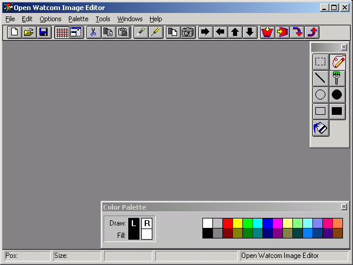
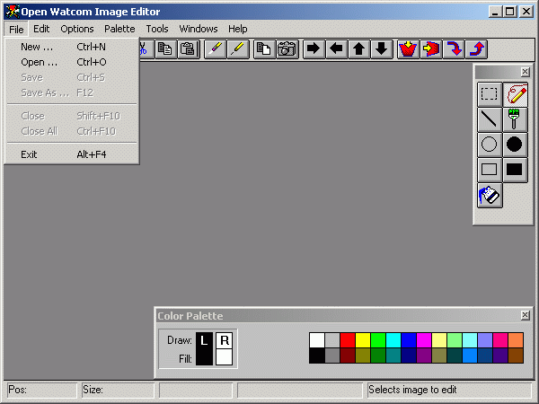
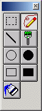
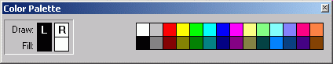
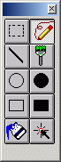

Index of Topics
- - A -
- Assigning Colors to Mouse Buttons
- C -
- Closing the Image Editor
Creating a Design Grid
Creating and Editing Bitmaps
Creating and Editing Cursors
Creating and Editing Icons
- H -
- Hiding and Showing the Color Palette
- I -
- The Image Editor Color Palette
The Image Editor Menu Bar
The Image Editor Status Line
The Image Editor Toolbar
The Image Editor Toolbox
- M -
- The Main Screen
- O -
- The Open Watcom Image Editor
Opening the Image Editor
- S -
- Selecting Screen and Inverse Colors
The Open Watcom Image Editor
If you want to design visual resources such as bitmaps, icons, or cursors and add sizzle to your application's interface,
the image editor can help.
The Image Editor is a visually oriented drawing tool with the power to draw all the visual resources you want - exactly
the way you picture them. This way, you can design effective bitmaps, meaningful icons, and communicative cursors.
Of course, the Image Editor can help bring to life your new artistic achievements. But it can also copy visual
images from anything else you can see on your computer screen. For example, if you would like to incorporate a favorite
bitmap or icon from your desktop or even from another application, you can use the Image Editor's Screen Select option to
copy that image to your design grid where you can tailor the image to your exact specifications. Then, when you are
happy with your visual image, you can save it to an executable.
Most of the sections in this chapter apply to all your visuals, but for more information on the specific type of visual
you are creating, see the sections specific to creating and editing your specific resource type.
This chapter contains the following:
- Opening the Image Editor
- Closing the Image Editor
- The Main Screen
- The Image Editor Menu Bar
- The Image Editor Toolbar
- The Image Editor Toolbox
- The Image Editor Color Palette
- The Image Editor Status Line
- Creating and Editing Bitmaps
- Creating and Editing Cursors
- Creating and Editing Icons
Opening the Image Editor
- To open the Image Editor:
-
- Double click on the Image Editor icon in your windows program manager,
or
- Select the Image Editor icon and choose Open from the File menu.
The Open Watcom Image Editor window appears.
Closing the Image Editor
- To close the Image Editor and return to your desktop:
-
- Double click on the system menu in the top, left corner of the screen,
or
- Choose Exit from the File menu.
When you close the Image Editor, it remembers the size and position of its main window, as well as the position of the
toolbar and color palette. It also remembers whether the toolbar and color palette were hidden or not. This way,
when you open the Image Editor again, it is set up the same way you left it.
The Main Screen
Every time you open the Image Editor, the Open Watcom Image Editor window appears. The toolbar, toolbox, and color
palette you use to edit your images appear on top of this window.

Figure 1. The Open Watcom Image Editor window
You cannot draw or copy images onto the screen itself. Instead, you must first create a design grid, a work
area on which you can design your visuals. You can create an empty design grid and draw your own visual or you can
create a design grid with an image from your desktop or another application already on it. Once you have an image on
your design grid you can edit it so it looks exactly the way you want.
Creating a Design Grid
- To create a design grid:
-
(1)
- Choose New from the File menu.
The Image Type dialog box appears.
(2)
- Select the type of image you want to create by clicking on either Bitmap, Icon, or Cursor.
(3)
- Click on OK.
A dialog box appears where you specify the image size you want to work with. The Image Editor automatically defaults
to the standard sizes (in pixels) for bitmaps, icons, and cursors. To create different sized images, simply enter the
desired pixel width and height.
(4)
- Click on OK.
For more information on creating and editing a bitmaps, cursors or icons, see the sections entitled Creating and Editing Bitmaps,
Creating and Editing Icons, and Creating and Editing Cursors.
The menu bar along the top of the Image Editor window allows you to access most of the items in the toolbar, the toolbox,
and the color palette. It also provides you with other items that you cannot access anywhere else except on the menu
bar.

Figure 2. The Open Watcom Image Editor menu bar
To see what an item does, position your cursor over the item and hold the mouse button. A description of the
item appears in the status line. For more information about the status line, see the section entitled The Image Editor Status Line.
This manual assumes that you know how to use the menus and are familiar with common menu items such as Save As and
Undo.
Some of the menu items have accelerator keys, also called accelerators, so you can invoke an item without having to
pull down the menu. This means, for example, that you can start a new image in three ways. You can either:
- Select the new image button from the toolbar, or
- Choose New from the File menu, or
- Press F2 (the accelerator for starting a new image).
The toolbar allows you quick and easy access to the most used items in the menus.

Figure 3. The Open Watcom Image Editor tool bar
To find out what a button does, position your cursor over the button and hold the mouse button. A description
of the button's function appears in the bottom right corner of your screen. If you only wish to read what the button
will do and not activate it, drag your cursor onto another part of the window and then release the mouse button.
Here is a list of the buttons from left to right in the toolbar and what they do.
- New
- Creates a new bitmap, icon, or cursor
Open
- Opens an existing file
Save
- Saves the current image
Toggle Grid
- Allows you to view the exact pixels on your design grid
Maximize
- Enlarges the appearance of your image and design grid
Clear
- Deletes everything on your design grid
Snap Bitmap
- Allows you to select a bitmap image from your desktop or another application and place that image on your design grid
Shift Right
- Moves the current image to the right
Shift Left
- Moves the current image to the left
Shift Up
- Moves the current image up
Shift Down
- Moves the current image down
Flip Vertically
- Mirrors the current image along the X-axis
Flip Horizontally
- Mirrors the current image along the Y-axis
Rotate 90 Clockwise
- Rotates the current image 90 degrees clockwise
Rotate 90 Counter Clockwise
- Rotates the current image 90 degrees counter clockwise
The toolbox allows you to conveniently select and change the tool you are using to edit your image, without having to
hunt through the menus for the tool you want.

Figure 4. The Open Watcom Image Editor toolbox
Here is a list of the tools and what they do.
- Pencil
- Draws on the grid, pixel by pixel
Lines
- Draws straight lines on the grid
Ellipse Outline
- Draws outlines of circles and ellipses
Ellipse Fill
- Draws filled circles and ellipses
Rectangle Outline
- Draws outlines of rectangles
Rectangle Fill
- Draws filled rectangles
Brush
- Draws on the grid in various brush sizes
Select Region
- Allows you to select a rectangular region on the grid
Select Hot Spot
- Allows you to select the cursor hot spot (for cursors only)
The Image Editor Color Palette
If you want to draw or fill a new visual in different colors, or change the colors of an existing bitmap, icon, or cursor,
the color palette allows you to select the colors you want.

Figure 5. The Open Watcom Image Editor color palette
- To select a color:
-
(1)
- Click either the left or right mouse button on the color in the color palette that you wish to assign to that button.
(2)
- Select a drawing tool.
(3)
- Draw or fill holding down the mouse button assigned to the color you want.
For example, if you want to draw a red line:
- Create a design grid for the resource you want
- Select a shade of red from the color palette.
- Select the line tool from the toolbox.
- Drag your cursor across the design grid.
When you choose one of the 12 colors on the right of the color palette, the draw color will not be the same as the fill
color. Don't be alarmed. This is because they are not true VGA colors. The Image Editor creates them by
dithering two or more colors together so that, while the color appears solid in the view window, it is actually made up of
different colored pixels intermingled with each other. Since it is impossible to represent a single pixel-unit of a
dithered color, the draw color always differs from the fill color when you select a dithered color.
Selecting Screen and Inverse Colors
Unlike simple bitmaps, visuals such as icons and cursors usually require transparent or inverse colors. This is
so that they don't entirely obscure everything underneath them and so they can be seen no matter what color they happen to
be sitting on.
When you create or edit an icon or cursor, you can choose the screen and inverse colors from the color palette.
Then, you can draw portions of your icon or cursor with those colors, so that these pixels blend into the background of your
application.
Remember, if you want to use a specific color in your icon or cursor, make sure the color you want to use is not the
screen or inverse color. Reserve these two colors for drawing only the transparent portions of your icon or cursor.
And use the other 26 colors available in the color palette for regular drawing.
- To choose a screen color:
-
(1)
- Create a design grid for a cursor or icon.
(2)
- Move your cursor over the two squares beside the words Screen and Inverse, so that your cursor changes from a pointer
to a hand.
(3)
- Double click on either square.
The Select Screen Color dialog appears.
(4)
- Select the color you want to use as your screen color.
(5)
- Click on OK.
The dialog closes and the screen color and its inverse are assigned to the screen and inverse boxes in the color palette.
These will be the Screen and Inverse colors you can use to draw the portions of your icon or cursor that you want to
be transparent.
- Note:
- When you select a color, its inverse is automatically selected for you. Try to find a screen color and inverse color
that you won't want to use in the foreground of your icon or cursor. For example, if you don't intend to use yellow
in your icon, select yellow as your screen color. The inverse color, blue, is automatically selected for you, so if
you intend to use blue in your icon, find another screen color that doesn't have blue as its inverse.
When you are drawing and filling in multiple colors, you may find it useful to assign colors to the left and right mouse
buttons. This way, you can draw in one color, and quickly switch to another color simply by pressing the opposite mouse
button. For example, if you find you draw mostly in black and red, assign black to the left mouse button and red to
the right mouse button. To do this,
- (1)
- Select the black square by clicking on it with the left mouse button.
(2)
- Select the red square by clicking on it with the right mouse button.
The colors assigned to the mouse buttons appear in the squares of the color palette marked L (for left) and R (for right).
Hiding and Showing the Color Palette
If you generally only draw in one or two colors or temporarily need more room on your screen, you can hide the color palette:
- Double click on the system menu icon in the corner of the Color Palette, or
- Choose Show Color Palette from the Options menu.
To reveal the color palette again, choose Show Color Palette again from the Options menu.
The Image Editor Status Line
There are five sections in the status line. The first four sections provide information on the current image.
The fifth section displays hint text for the items in the menus, toolbar, and toolbox when you position your cursor over
an item and hold down the mouse button.

Figure 6. The Open Watcom Image Editor status line
Creating and Editing Bitmaps
If you want your applications to have visual impact, you can create and edit bitmaps. Bitmaps are graphical images
that can be as large as 512 x 512 square pixels representing such things as buttons, brush patterns, company logos, toolbar
items, wallpaper, and graphical elements in menus.
Using the Image Editor you can create a new bitmap or you can create a bitmap from any other image on your desktop.
You can even copy a bitmap from another application on your desktop.
- To create a new bitmap:
-
(1)
- Choose New from the File menu.
The Image Type dialog appears.
(2)
- Select Bitmap.
(3)
- Click on OK.
The Bitmap Information dialog appears. This dialog prompts you for information about the dimensions of the bitmap
you want to create and the color scheme you want to work with. The Image Editor defaults to the dimensions most commonly
used for creating bitmaps, 32 pixels by 32 pixels. However, if you want to create a different sized bitmap, enter the
pixel width and height you want. The Image Editor also defaults to a 256-Color color scheme. Other color schemes
available are 16-Color VGA and 2-Color Monochrome.
To copy a bitmap from your desktop or from another application on your desktop:
- (1)
- Choose New from the File menu.
The Image Type dialog appears.
(2)
- Select Bitmap.
(3)
- Click on OK.
The Bitmap Information dialog appears.
(4)
- Select the Screen Select button.
This option allows you to choose the size and contents of the newly created bitmap with images from your desktop or from
another application sitting on your desktop. The Image Editor ignores the limitations specified in the Bitmap Information
dialog and uses the dimensions you sweep out (up to 512x512 pixels).
(5)
- Position the cursor at the image you want to select.
(6)
- Hold the left mouse button and drag the cursor across the image you want to copy to your design grid.
(7)
- Release the mouse button.
The image you selected appears on your design grid.
Creating and Editing Cursors
You can create and edit cursors that communicate to your users the mode or state of the application.
You can create a new cursor or you can create an empty cursor and copy an image from your desktop or another application
onto your design grid. From there you can edit your cursor's appearance and set its hot spot.
When you edit cursors, the Image Editor provides you with an extra tool called Set Hotspot This tool allows
you to select the exact pixel to which you want to assign the hotspot. The default hotspot is 0,0 (at the top left
corner of the design grid).

Figure 7. The Set Hotspot tool allows you to select the hotspot
- To create a new cursor:
-
(1)
- Choose New from the File menu.
The Image Type dialog appears.
(2)
- Select Cursor.
(3)
- Click on OK.
The Cursor Format dialog box appears. Since cursors should be standardized, you can only choose monochrome cursors
32x32 pixels. You cannot create a colored cursor.
(4)
- Click on OK.
Cursors (and icons, too) differ from bitmaps in that they almost always include pixels that blend into the background
of your application. Unless you want a rectangular shaped cursor, you must assign special screen and inverse colors
to the "blending pixels," so that they don't obscure the areas over which you move the cursor.
Since you can only create black and white cursors, do not use black or white as your screen or inverse colors.
Instead, use one of the dithered colors as your screen color. The Image Editor automatically chooses the inverse of
the chosen dithered color.
For more information on selecting screen and inverse colors, refer to the section entitled Selecting Screen and Inverse Colors.
Creating and Editing Icons
With the Image Editor, you can create icons that look exactly the way you want. Icons are usually the user's first
exposure to your application, so you want them to be as professional and meaningful as possible.
You can create a new icon or you can create an empty icon design grid and use the Image Editor's Snap Bitmap option
to copy an image from your desktop to your design grid where you can edit it as desired.
- To create a new icon:
-
(1)
- Choose New from the File menu.
The Image Type dialog appears.
(2)
- Select Icon.
(3)
- Click on OK.
The Icon Target dialog box appears. You can create the following types of icons:
- 16-color 32x32
- 2-color 32x32
- 2-color 32x16
- 16-color 16x16
- 2-color 16x16
- 256-color 48x48
- 16-color 48x48
- 16-color 24x24
(4)
- Select the desired icon type.
(5)
- Click on OK.
The Image Editor window displays an empty icon design grid awaiting your new creation.
If you want to copy an image from your desktop or from another application sitting on your desktop, select the Snap Bitmap
option from the toolbar and drag across the image on your desktop that you want to copy.